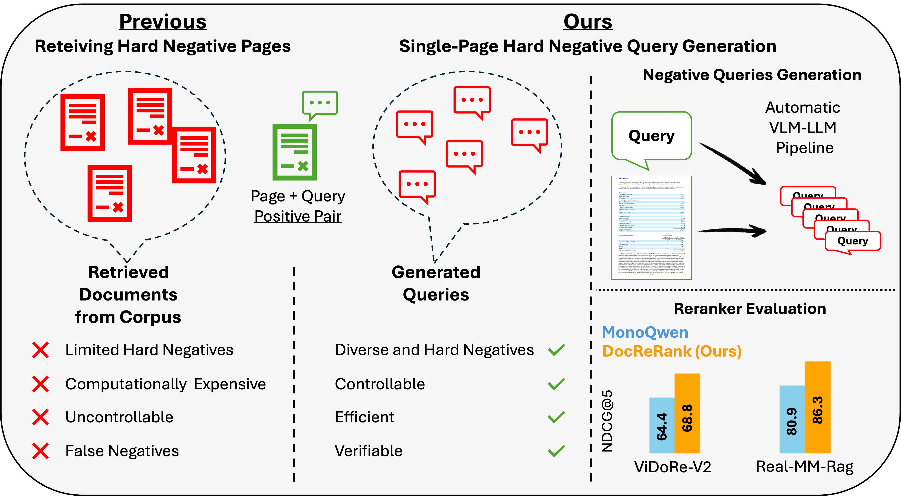
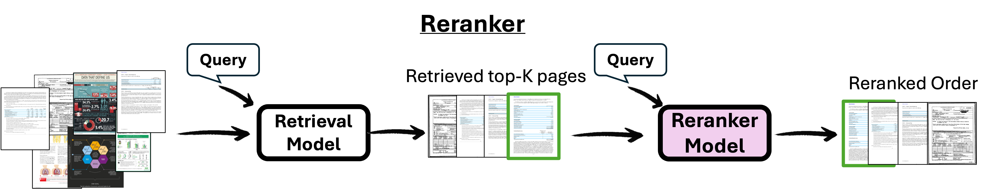
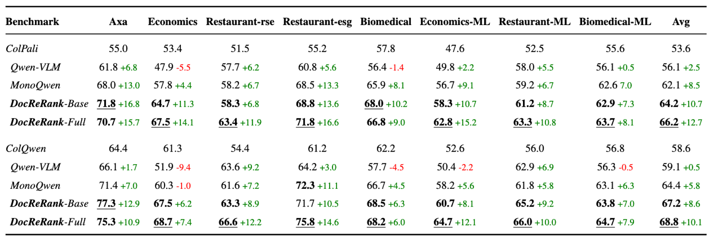
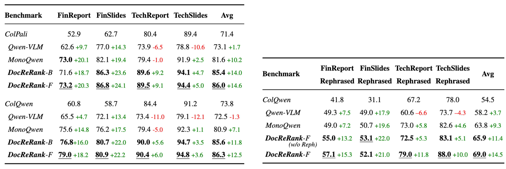

DocReRank
Single-Page Hard Negative Query Generation for Training Multi-Modal RAG Rerankers
1Weizmann Institute of Science 2 IBM Research Israel


Proposed Single-Page Hard Negative Query Generation Approach
Abstract
Rerankers play a critical role in multimodal Retrieval-Augmented Generation (RAG) by refining ranking of an initial set of retrieved documents. Rerankers are typically trained using hard negative mining, whose goal is to select pages for each query which rank high, but are actually irrelevant. However, this selection process is typically passive and restricted to what the retriever can find in the available corpus, leading to several inherent limitations. These include: limited diversity, negative examples which are often not hard enough, low controllability, and frequent false negatives which harm training. Our paper proposes an alternative approach: Single-Page Hard Negative Query Generation, which goes the other way around. Instead of retrieving negative pages per query, we generate hard negative queries per page. Using an automated LLM-VLM pipeline, and given a page and its positive query, we create hard negatives by rephrasing the query to be as similar as possible in form and context, yet not answerable from the page. This paradigm enables fine-grained control over the generated queries, resulting in diverse, hard, and targeted negatives. It also supports efficient false negative verification. Our experiments show that rerankers trained with data generated using our approach outperform existing models and significantly improve retrieval performance.
Re-ranking Framework
Given a query and a document corpus, a retrieval model first retrieves the top-K relevant pages. A reranker then reorders these K pages based on the query to improve retrieval quality.
Dataset Construction Pipeline.
Our data construction pipeline implements Single-Page Hard Negative Query Generation, a novel approach that reverses traditional hard negative mining. Instead of retrieving negative pages for each query, we generate multiple hard negative queries for each document page. The process starts by creating positive queries with a Vision-Language Model and verifying their answerability, followed by generating challenging negative queries through an LLM and validating them with a VLM to ensure they are unanswerable yet semantically close to the original. This design enables greater diversity, precise control over difficulty, and efficient verification, resulting in high-quality triplets (page, positive query, hard negatives) that significantly improve reranker performance. Our method also supports domain-specific adaptation—such as finance-focused negatives that alter fine-grained attributes (e.g., years, numbers, entities)—to target real-world challenges.
Examples of Our Generated Negative Queries
We show examples of a cropped page and its positive query, along with the generated negative queries. Top: hard negatives generated using the general pipeline. Bottom: negatives generated using finance fine-detail prompts, which modify specific properties in the query.
Model Performance on the ViDoReV2 Benchmark
Retrieval NDCG@5 Results. The first row in each block shows first-step retrieval results using ColPali or ColQwen. The remaining rows correspond to second-step reranking results. Our model DocReRank-Base is trained with a similar configuration to MonoQwen but includes our generated data. DocReRank-Full is trained with generated fine-grained details and rephrased negative queries.
Model Performance on the Real-MM-RAG Benchmark
Retrieval NDCG@5 results of rerankers after the first-step retrieval using ColPali and ColQwen. The left table shows performance on the original benchmark, while the right table shows performance on the rephrased version, where queries were reworded to preserve meaning but use different phrasing.
BibTeX
@article{wasserman2025docrerank,
title={DocReRank: Single-Page Hard Negative Query Generation for Training Multi-Modal RAG Rerankers},
author={Wasserman, Navve and Heinimann, Oliver and Golbari, Yuval and Zimbalist, Tal and Schwartz, Eli and Irani, Michal},
journal={arXiv preprint arXiv:2505.22584},
year={2025}
}